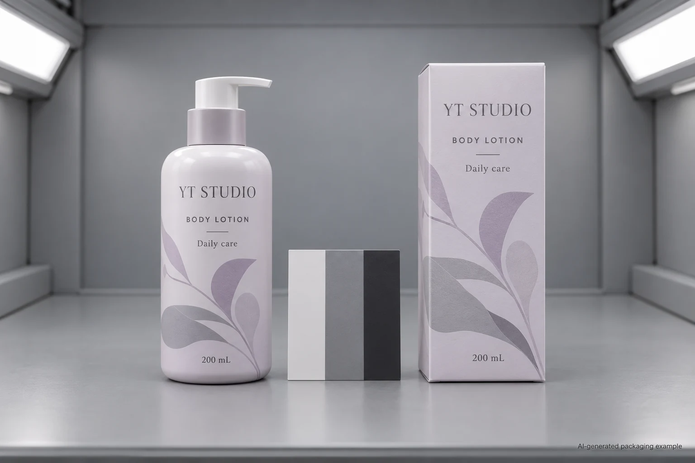
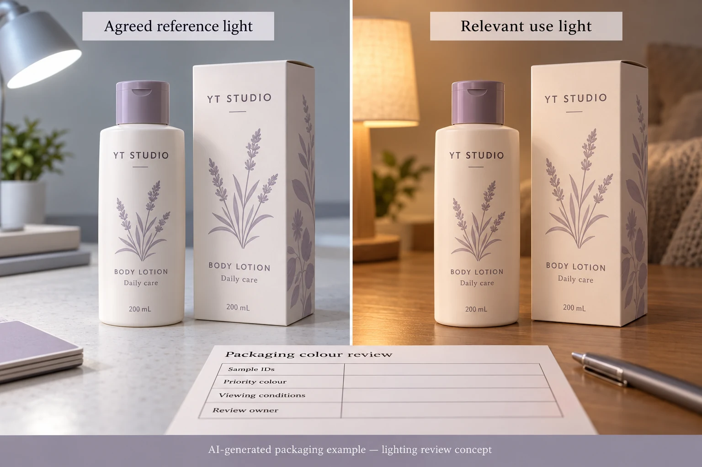

Suppose the lotion bottle and its carton look like a matched set in the approval room. Under the shop's lighting, the bottle label looks greener and the carton looks greyer. Ordering another run against the same unqualified instruction??match the carton??does not settle which appearance the brand is buying.
Bring the actual finished components together under agreed viewing conditions, then check the additional lighting that matters to their use. If the relationship changes when the light changes, ask the colour specialist to investigate it before correcting an ink recipe. A match under one light does not establish a match under every other light.

Make sure everyone is comparing the same pair
Start with the accepted label and carton revisions, including their materials and finishes. A flat paper proof, a laminated label on an amber bottle and a printed carton are different presentations. Identify the reference pair and keep those pieces together. A replacement carton from another run may make the comparison a new investigation.
Compare the assembled pack rather than an isolated screen image. Record whether the bottle is filled, its colour, the label background and the finish. For a clear label, the pack behind the print contributes to the appearance. For a glossy label beside a matte carton, highlights and viewing angle can also affect what a reviewer sees. Those observations do not automatically diagnose metamerism.
First establish the mismatch itself. Which named colour or area changes its relationship to the reference? Does the product name remain readable? Is the brand asking for the same appearance everywhere, or a practical family resemblance between different materials? Those are different acceptance requests, and they can carry different production implications.
What metamerism adds to the colour conversation
X-Rite describes metamerism as colours appearing to match under one lighting condition and diverging under another. Its guidance explains why components made with different colourant systems deserve attention when assembled into one product. That is relevant to a label and carton supplied through different printing routes.
The practical consequence is a viewing decision. If two samples are approved under an unspecified desk lamp and disputed under another unspecified lamp, neither side has a repeatable comparison. A photo may help point to the affected area, but the camera, automatic white balance and screen introduce their own changes. Do not use two differently lit phone photographs to calculate a production tolerance.
This is also a different question from fading after a period of exposure. Here the same unaged samples can change their apparent relationship as the viewing light changes. The lightfastness guide addresses the separate question of appearance after an exposure period. A solution to one question does not automatically close the other.
Agree a primary view and an additional use view
Ask the printer and the brand's colour reviewer which controlled viewing arrangement is appropriate for approval. Identify it in the project record. Then identify the relevant additional use condition: a retailer's specified lighting, an agreed shop-light reference or another actual environment the brand needs to evaluate.
Do not choose a particular colour temperature solely because it sounds like daylight. Have the qualified reviewer specify the useful arrangement and any equipment or procedure required. The aim is to obtain a comparison that another reviewer can repeat, rather than a list of lamp names copied from the internet.
Two reasonable project routes may follow. A short presentation run with no retail lighting requirement may use an identified physical reference and an expressly limited approval scope. A recurring bottle-and-carton program for a named retail environment may need both the controlled reference view and an additional agreed lighting review. The second route has more evidence to obtain; that does not establish a universal test obligation for every cosmetic label order.
Use a lighting comparison sheet that records relationships
| Field | What the buyer supplies or obtains | What it helps decide |
|---|---|---|
| Components | Label and carton identifiers, revisions, finishes and assembled bottle reference | Whether the right pair is being compared |
| Priority area | Named colour or graphic, marked location and approved reference | Which mismatch matters to the project |
| Primary viewing condition | Arrangement agreed with the colour owner and printing team | Whether the basic comparison is repeatable |
| Additional use condition | Identified relevant lighting or actual use reference, with limitations recorded | Whether the relationship changes in a condition that matters |
| Observation | Which component appears different, where, under which view and angle | Whether a colour, surface or presentation investigation is needed |
| Next decision | Owner, proposed sample change, comparison required and acceptance scope | Whether the pair can be approved or needs another review |

Begin with the component identities and priority area. Review the pair under the primary condition before moving to the additional one. Keep the reference, presentation and reviewers consistent as far as the agreed procedure requires. Describe observations in ordinary language before asking a specialist to interpret them.
If the pair is already unacceptable under the primary view, resolve that mismatch first. If it is acceptable there but diverges in the additional use view, record the difference and ask whether the colourant system, substrate or finish requires investigation. If the additional environment is poorly described or cannot be reproduced, record that limitation; do not issue an all-lighting approval from an incomplete comparison.
Change the sample for a reason
A converter may propose a revised ink system, another agreed appearance target or a construction change. Ask what the proposal is intended to improve and which other properties need review. Do not promise that switching from process colour to a spot ink will remove every lighting mismatch. The actual colourants and finished constructions matter.
Another option is to accept a documented appearance difference between the two materials. That can be reasonable if the brand's identity and readability goals are met under the agreed conditions. It is the brand's decision to make, not an assumption that procurement should insert because the filling date is approaching.
If an accepted sample changes, connect the new version to the comparison record. Keep the previous pair identified so reviewers can understand why it was replaced. The Delta E agreement guide explains the separate requirements for a numerical colour-difference agreement; changing a number without specifying its equation and measurement conditions will not repair a viewing disagreement.
Ask for the comparison the project actually needs
For custom cosmetic bottle labels, send the actual container reference, artwork revision, quantity by design and label construction, along with the carton reference and the colour area that is causing concern. Describe where the pack will be viewed and who approves its appearance. For the wider first-proof discussion, start with the cosmetic label colour matching guide.
Use the inquiry form to prepare the message. Send artwork and comparison photographs separately by email or WhatsApp; the form does not automatically upload attachments. A well-identified pair and a clear viewing question give the printer something specific to investigate.
Source: X-Rite, What Is Metamerism?. The source supports the lighting-related phenomenon and the relevance of comparing components. This guide's review sheet is an editorial planning aid, not a measured diagnosis or a guarantee that a particular ink change will solve your pack.